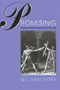

Browse
other Author lists:
A B C
D E F
G H I
J K L
M N O
P Q R
S T U
V W X
Y Z |
|
Customizing
the Body
The Art and Culture of Tattooing
Sanders,
Clinton R. and D. Angus Vail
Revised and Expanded Edition
280 pp • 5.5x8.25 • Spring 2008
paper 978-1-59213-888-3
cloth 978-1-59213-887-6
Excerpt available
|

|
Recasting Welfare Capitalism
Economic Adjustment in Contemporary France and Germany
Vail, Mark I.
248 pp • 6x9 • Fall 2009
cloth 978-1-59213-967-5
Excerpt available
|
|
Crossroads,
Directions, and a New Critical Race Theory
edited
by Valdes, Francisco, Jerome McCristal Culp and Angela P. Harris
440 pp • 7x10 • Fall 2001
paper 978-1-56639-930-2
cloth 978-1-56639-929-6
Excerpt available |

|
Transnational
Asian American Literature
Sites and Transits
edited
by Lim, Shirley Geok-lin, John Blair Gamber, Stephen Hong Sohn and
Gina Valentino 320 pp • 6x9 • Fall
2005
paper 978-1-59213-451-9
cloth 978-1-59213-450-2
Excerpt available |

|
Transnationalizing Viet Nam
Community, Culture, and Politics in the Diaspora
Valverde, Kieu-Linh Caroline
198 pp • 6x9 • Fall
2012
paper 978-1-4399-0680-4
cloth 978-1-4399-0679-8
Excerpt available |

|
Classical
Hindu Mythology
A Reader in the Sanskrit Puranas
edited
by Dimmit, Cornelia, translated by J. A. B van Buitenen
388 pp • 6x9 • Spring 1978
paper 978-0-87722-122-7
cloth 978-0-87722-117-3
Excerpt available |

|
Creating
the Countryside
The Politics of Rural and Environmental Discourse
edited
by DuPuis, E. Melanie and Peter Vandergeest
360 pp • 6x9 • Fall 1995
paper 978-1-56639-360-7
cloth 978-1-56639-359-1
Excerpt available |

|
Health
Care Ethics
An Introduction
edited
by VanDeVeer, Donald and Tom Regan
Fall 1986
paper 978-0-87722-441-9 |

|
The
American Perception of Class
Vanneman,
Reeve and Lynn Weber Cannon
384 pp • 6x9 • Spring 1987
paper 978-0-87722-593-5
cloth 978-0-87722-436-5 |

|
Movements in Times of Democratic Transition
edited by Klandermans, Bert and Cornelis van Stralen
382 pp • 6x9 • Fall 2014
paper 978-1-43991-181-5
cloth 978-1-43991-180-8 |

|
Thinking Your Way to Freedom
A Guide to Owning Your Own Practical Reasoning
Gardner,
Susan T., illustrations by Dirk van Stralen
256 pp • 8.5x11 • Fall 2008
paper 978-1-59213-867-8
Excerpt available |

|
My
Life as a Colombian Revolutionary
Reflections of a Former Guerrillera
Vásquez
Perdomo, María Eugenia, translated by Lorena Terando, introduction
by Arthur Schmidt
312 pp • 6x9 • Fall 2004
paper 978-1-59213-101-3
cloth 978-1-59213-100-6
Excerpt available |

|
The
Chicago Cubs Encyclopedia
Holtzman,
Jerome and George Vass
568 pp • 9x12 • Spring 1997
cloth 978-1-56639-547-2 |

|
Between
the Lines
South Asians and Postcoloniality
edited
by Bahri, Deepika and Mary Vasudeva
384 pp • 6x9 • Fall 1996
paper 978-1-56639-468-0
cloth 978-1-56639-467-3
Excerpt available |

|
The
Puerto Rican Diaspora
Historical Perspectives
edited
by Whalen, Carmen Teresa and Víctor Vázquez-Hernández
320 pp • 6x9 • Spring 2005
paper 978-1-59213-413-7
cloth 978-1-59213-412-0
Excerpt available |

|
Fela
The Life and Times of an African Musical Icon
Veal,
Michael E.
352 pp • 7x10 • Spring 2000
paper 978-1-56639-765-0
cloth 978-1-56639-764-3
Excerpt available |
|
The
Puerto Rican Movement
Voices from the Diaspora
edited
by Torres, Andrés and José E. Velázquez
432 pp • 6x9 • Spring 1998
paper 978-1-56639-618-9
cloth 978-1-56639-617-2
Excerpt available |

|
Drumming
for the Gods
The Life and Times of Felipe García Villamil, santero, palero,
and abakuá
Vélez,
María Teresa
256 pp • 6x9 • Fall 1999
paper 978-1-56639-731-5
cloth 978-1-56639-730-8
Excerpt available |

|
Unchopping a Tree
Verdeja, Ernesto
240 pp • 5.5x8.25 • Fall 2009
cloth 978-1-4399-0054-3
Excerpt available |

|
Forgotten
Conquests
Rereading New World History from the Margins
Verdesio,
Gustavo
216 pp • 7x10 • Fall 2000
paper 978-1-56639-834-3
cloth 978-1-56639-833-6 |
|
Pinoy Capital
The Filipino Nation in Daly City
Vergara, Jr., Benito M.
232 pp • 6x9 • Fall 2008
paper 978-1-59213-665-0
cloth 978-1-59213-664-3
Excerpt available |

|
Troubling Gender
Youth and Cumbia in Argentina's Music Scene
Vila, Pablo and Pablo Semán, contributions by Eloísa Martín and María Julia Carozzi
230 pp • 6x9 • Fall 2011
paper 978-1-4399-0267-7
cloth 978-1-4399-0266-0
Excerpt available |

|
Promising
Vitek,
William
288 pp • 5.5x8.25 • Fall 1993
cloth 978-1-56639-052-1 |

|
Who
Killed George Polk?
The Press Covers Up a Death in the Family
Vlanton,
Elias with Zak Mettger
352 pp • 6x9 • Fall 1995
cloth 978-1-56639-367-6 |

|
Mobilizing
an Asian American Community
Võ,
Linda Trinh
304 pp • 6x9 • Spring 2004
paper 978-1-59213-262-1
cloth 978-1-59213-261-4
Excerpt available |

|
Contemporary
Asian American Communities
Intersections and Divergences
edited
by Võ, Linda Trinh and Rick Bonus
264 pp • 7x10 • Spring 2002
paper 978-1-56639-938-8
cloth 978-1-56639-937-1
Excerpt available |

|
Still
Philadelphia
A Photographic History, 1890-1940
Miller,
Fredric M., Morris J. Vogel and Allen F. Davis
312 pp • 8x10 • Spring 1983
cloth 978-0-87722-306-1 |

|
Philadelphia
Stories
A Photographic History, 1920-1960
Miller,
Fredric M., Morris J. Vogel and Allen F. Davis
319 pp • 8x10 • Fall 1988
cloth 978-0-87722-551-5 |

|
Cultural
Connections
Museums and Libraries of the Delaware Valley
Vogel,
Morris J.
256 pp • Fall 1991
cloth 978-0-87722-840-0 |

|
Empowering Young Writers
The Writers Matter Approach
Yost, Deborah S., Robert Vogel and Kimberly E. Lewinski
192 pp • 6x9 • Spring 2014
paper 978-1-4399-1082-5
cloth 978-1-4399-1081-8 |

|
Down and Out in Los Angeles and Berlin
The Sociospatial Exclusion of Homeless People
von Mahs, Jürgen
208 pp • 6x9 • Spring 2013
paper 978-1-4399-0827-3
cloth 978-1-4399-0826-6
|